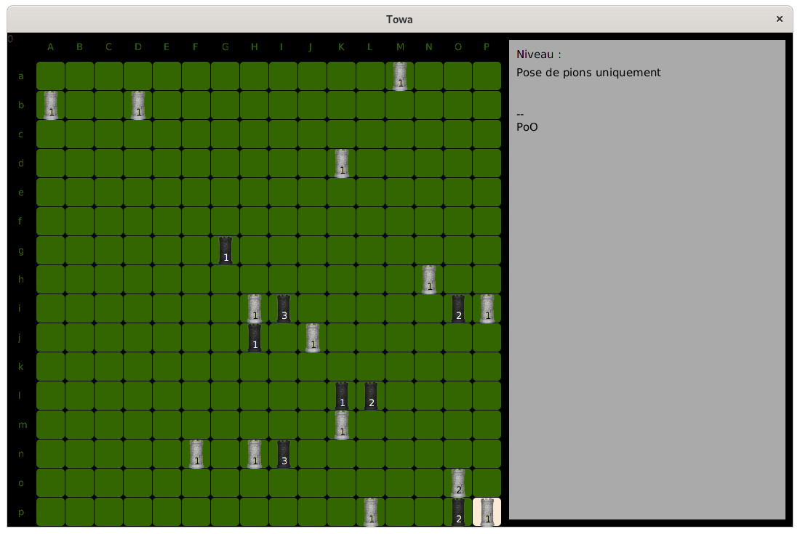
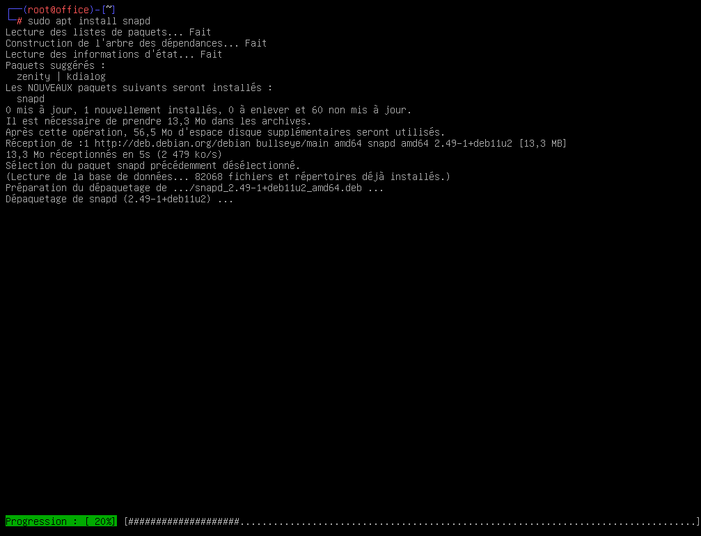
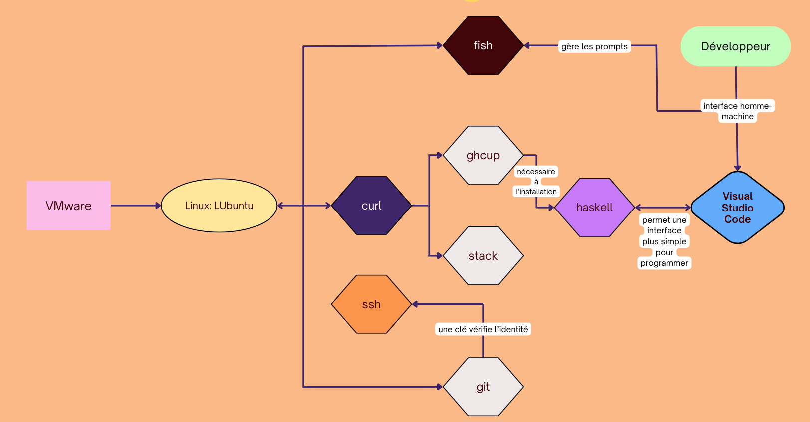
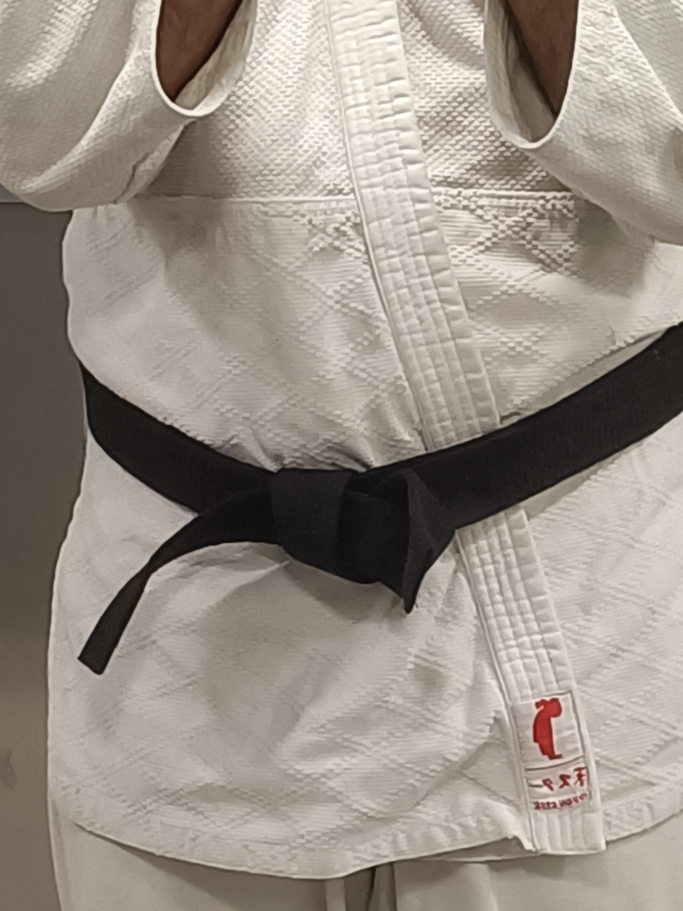

Towa: jeu de plateau
Mes compétences clés en développement Java, tests unitaires, conception de stratégies d'IA, modélisation de base de données, installation et configuration de logiciels, administration système, gestion de projet, et travail en équipe.
 En savoir plusIA pour le jeu Towa
Développement de deux IA pour le jeu Towa en Java avec VS Code. L'IA Walter White utilise une stratégie basée sur la pose de pions en diagonale aux pions adverses pour obtenir un bonus de hauteur, tandis que l'IA Jesse utilise une stratégie basée sur la pose de 4 tours de 3 de hauteur et une activation aléatoire pour détruire les tours adverses.
En savoir plusNetwork Installation Tutorial
Tutoriel sur la configuration d'un réseau avec des adresses IP et des masques de sous-réseau.
 En savoir plusBase de données pour l'entreprise TalloM
Création d'une base de données pour l'entreprise TalloM (fausse entreprise) pour gérer ses opérations.
 En savoir plus
En savoir plus
Installation de poste de développement
Préparation de machines virtuelles pour l'équipe de développeurs en utilisant VMWare et Lubuntu.
 En savoir plusAcquisition de la ceinture noir au judo
Acquisition de la ceinture noir au judo en 2023. Judo qui d'ailleurs signifie "voie de la souplesse" en japonais, ce qui s'accompage de ses valeurs qui sont: la modestie, la politesse, la sincérité, l'amitié, le contrôle de soi, le courage, le respect et l'honneur
 En savoir plus